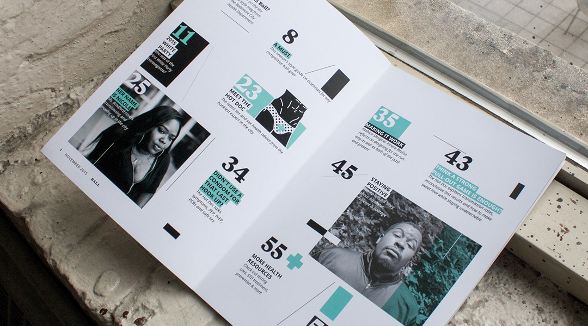
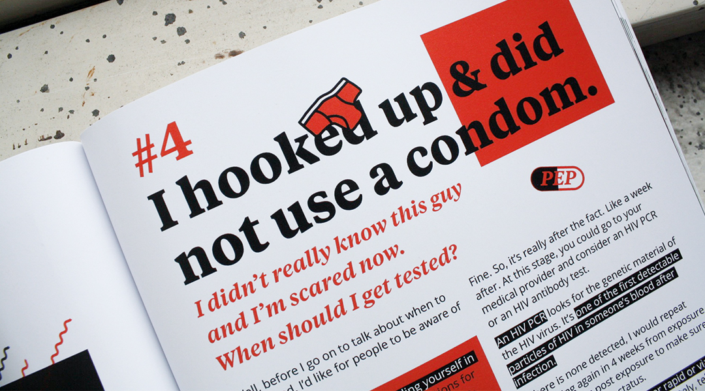
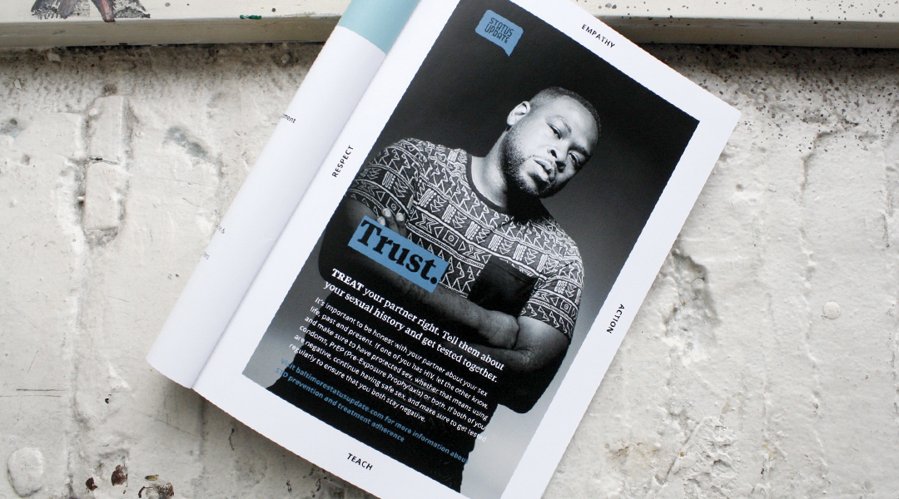
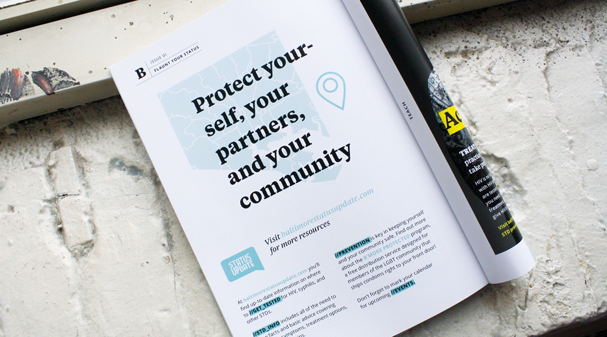
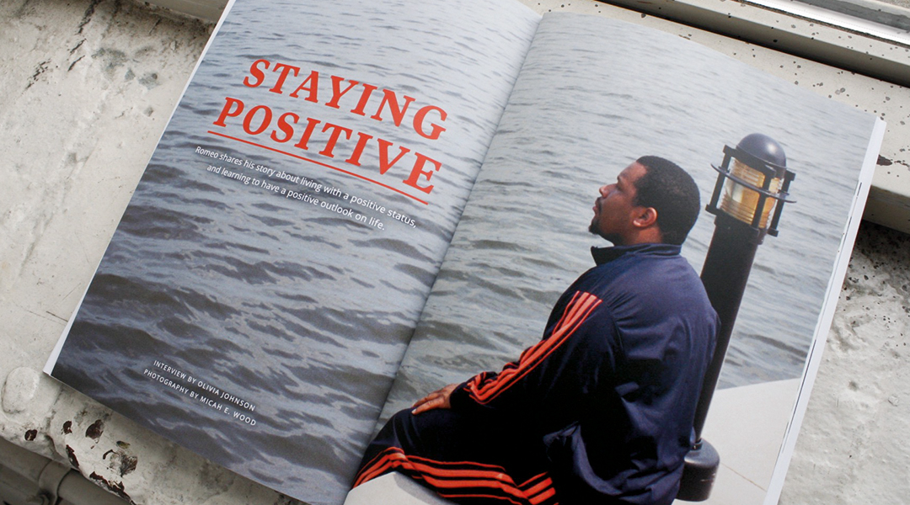
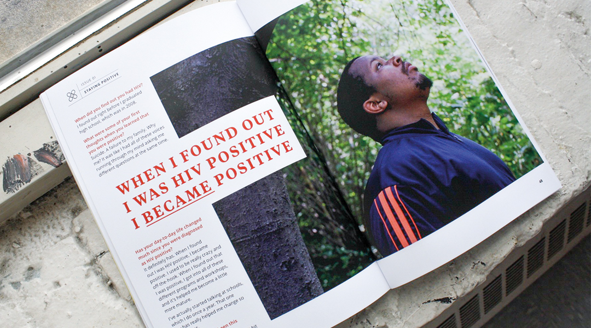
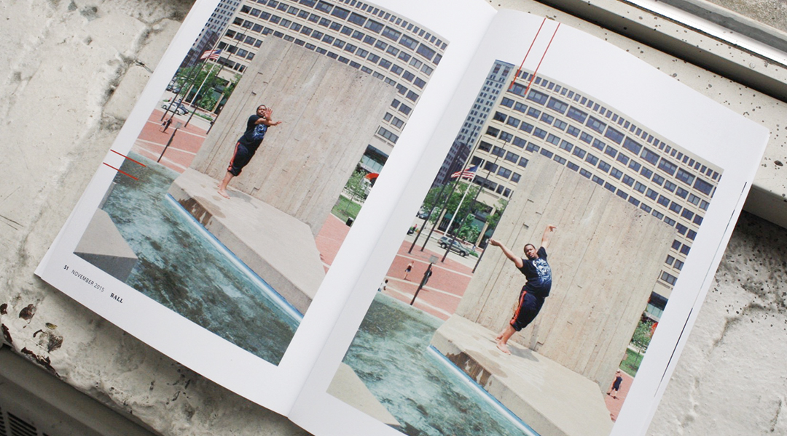
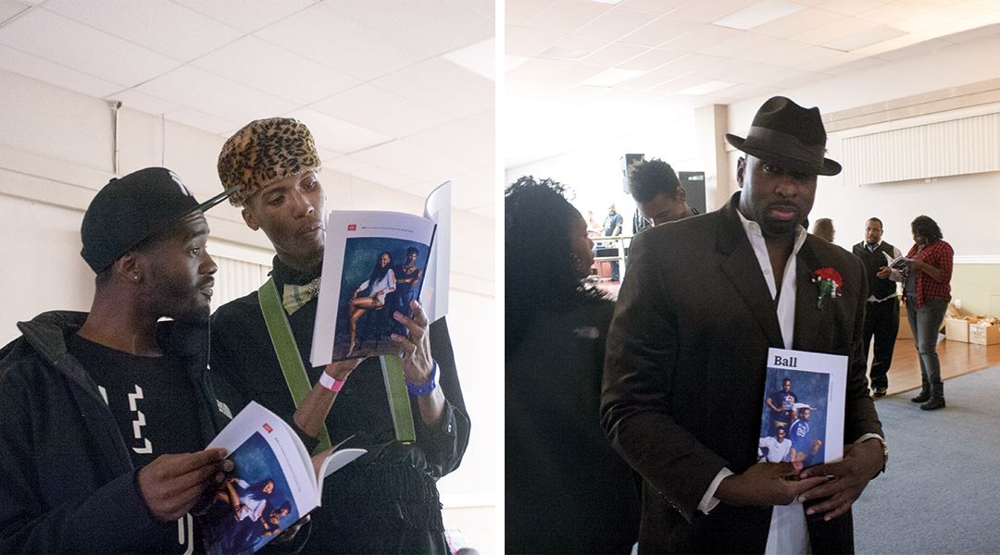

Concept
BALL was created to encourage HIV treatment adherence and open up the conversation about what it means to be healthy and sexy. The publication focuses on sexual health, but also features fun Ball-centric articles that are exciting to read. BALL was a collaboration between Olivia Johnson, Alexander Reynolds, Amy Hushen, and Nick Fogarty, and was created for the Baltimore City Health Department. Each team member holds equal responsibility in the research, content, and design of the book.




Process
Following a successful 2011 campaign to promote testing for HIV and other sexually transmitted infections among African American MSM (men seeking men) in Baltimore, MICA's Center for Social Design and the Baltimore City Health Department partnered to create something that would continue to bring the community together and help to dispel the myths and stigma surrounding sex and HIV.
After months of research, focus groups, and lots of doughnuts, the team came up with the idea of a publication created for-and-by the Ball Community, a community primarily composed of black lesbian, gay, bisexual, transgender and queer (LGBTQ) individuals who attend competitive runway performance events. The result is BALL, a magazine with a mix of both practical sexual health information and fun Ball-centric articles.



Impact
Since printing, over 800 copies of BALL magazine have been distributed at Ball events and health clinics around Baltimore. Planning for the next issue is already underway. Beyond the publication itself, the success of the BALL magazine has resulted in additional funding and support for Baltimore City Health Department and MICA's Center for Social Design to continue working together.
BALL has received accolades from PRINT, Core77, and was displayed in Greater Good: Social Design Invitational, and Shenzhen International Design Festival.
